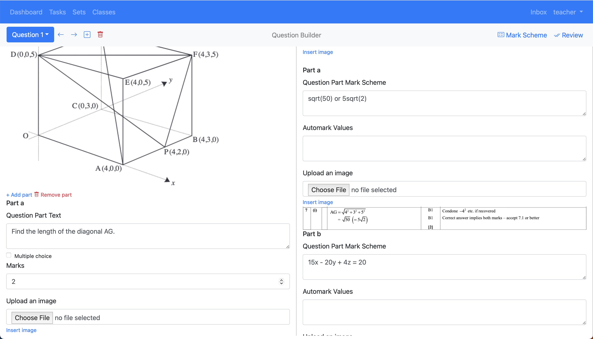
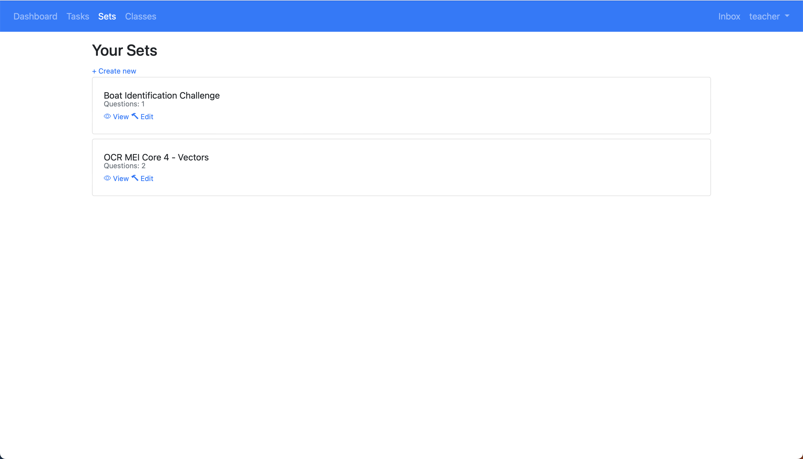
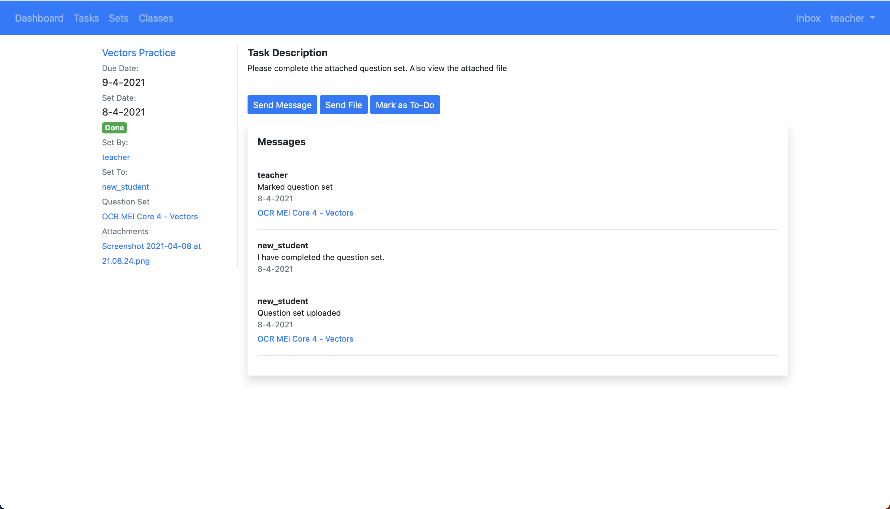
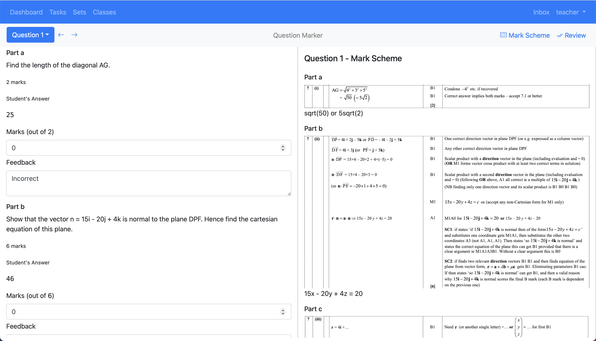

Dragonfly

- Teachers wanted a fast way to assign students a bundle of exam questions, and a quick way to collect and grade those students' answers according to the rubrics for each problem.
- Students primarily wanted to review as many exam questions as quickly as possible, and to have quick access to rubrics to check their answers against.
Question Builder and Question Viewer
So, the meat of this project was implementing question builder and question viewer interfaces:

Both are two-panel interfaces that allow the questions and their rubrics to be viewed and developed in parallel. The builder allows users to dynamically insert and remove multiple-part questions, supporting both text-based and multiple choice answers. The final question set is then converted into an internal representation and stored in an SQL database. Any inserted images are saved to an Amazon S3 bucket. Logged-in users can then pull up any of the question sets they have made from the Sets screen:

Both interfaces use a custom rendering engine under the hood, implemented entirely with vanilla Javascript. The backend is a Python Flask server.
LMS Features
Towards the end of the project, I added several LMS features to better address teachers' needs. Teachers can invite students to classes, assign question sets to them, and then collect and grade the responses. Individual feedback can be provided and viewed from the Task view:

Our two-panel interface makes a return in the form of a Question Marker, that allows easy grading of student submissions:

and a question feedback viewer for students: